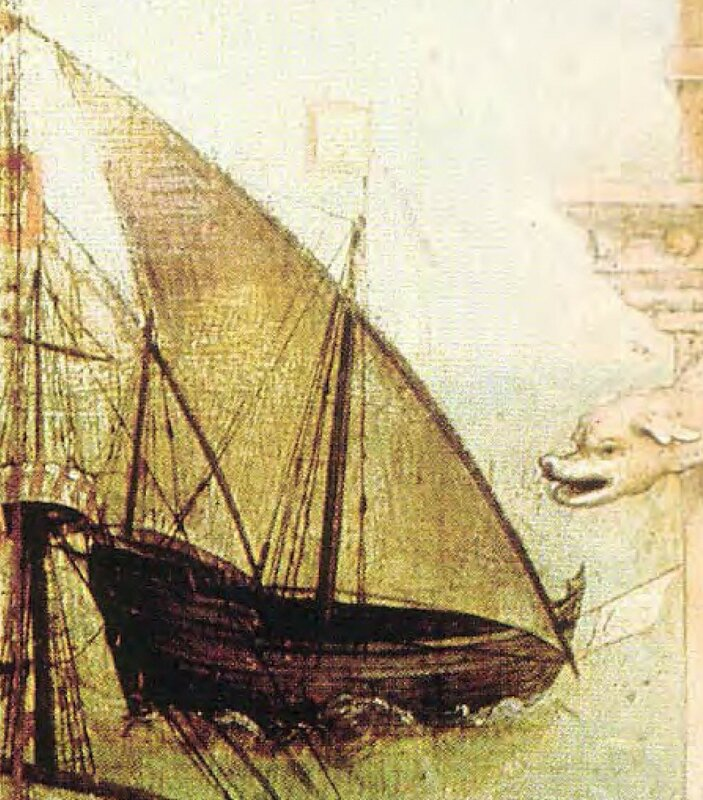

Надо быть крайне наивным или бесстыдно самонадеянным, чтобы утверждать о некой новизне мыслей, которые предполагается высказать в наше дальнейшем рассказе. Все украдено сказано до нас. Но сказано так много, что этот сказ стал внутренне противоречивым, нелогичным, запутанным. Мы не будем говорить ничего нового, но постараемся по другому расставить акценты в прежних рассказах. Кстати, меня приятно удивила статья «Каравелла» в русской Википедии. Если не обращать внимания на несколько сумбурную композицию, в ней собран достаточно обширный материал, основанный на современных источниках. И все же придется в ходе нашего дальнейшего рассказа с некоторыми положениями статьи поспорить.

Изображение каравеллы. Ретабло св. Авты
Начнем не с корабля, а с имени.
Слово каравелла (в различных орфографических вариантах) появилось задолго до начала плаваний португальцев вдоль африканского побережья. Поэтому правильным будет разделить историю этого термина на два периода, границей между которыми как раз и служит появление того судна, которое в процессе эволюции превратилось в классическую каравеллу XV-XVI веков.
Общим местом практически всех историй, описывающих появление каравеллы, является утверждение, что имя корабля пошло от португальского caravo , которое, в свою очередь, произошло от греческого κάραβος (начинается с κ , а не с χ, как почему-то любят писать) через латинское carabus (так, к примеру, считает знаток итальянской этимологии Прати). Примем это во внимание и, порывшись в архивах, установим, что латинский термин carabus впервые отмечается в 1230 году, в Codex Italiae Diplomaticus.
Но на наш взгляд, это слишком прямолинейный подход. И вот почему. Когда ранее мы изучали происхождение термина «корабль», мы тщательно исследовали альтернативу : произошло это слово от греческого κάραβος или латинский carabus повел начало от арабского qārib и потом уже пришел на Русь. В итоге, мы пришли к компромиссному варианту. Иностранные заимствованные слова, как считает И.И.Срезневский, наложились на славянские корни korab, korabi (означающие остов барки, кокору) и стали вполне себе народным термином.
Конечно же, следует принять во внимание, что арабское судно qārib появилось в иберийских водах значительно раньше, чем установленное нами появления в латинском термина carabus, а уж тем более, ранее появления испанского caraba и португальского caravo. Существенную помощь в установлении этого факта нам оказали материалы Каирской генизы, тщательно изученные востоковедом Шломо Гойтейном (Shelomo Dov Goitein, A Mediterranean Society: The Jewish Communities of the Arab World as Portrayed in the Documents of the Cairo Geniza, Vol. I — Vol. VI.) Термин qārib, как им было установлено, для обозначения судов морского плавания, а также сопровождающих большие корабли вспомогательных судов, широко использовался андалузскими арабами. Об этом можно также узнать из рукописи Абуль-Хасана аль-Джазири (1189 г.). Так что переход его, как и многих других слов обиходной и технической лексики того времени, в португальский язык мог быть вполне естественным.
Приведенные соображения, возможно, нельзя со стопроцентной уверенностью считать доказательством происхождения термина каравелла от арабского кариб, но в любом случае они должны поколебать ту твердую убежденность практически всех современных словарей в однозначном происхождении этого термина от греческого карабос. Тем более, что эта убежденность иногда принимает странные очертания.
Из работы в работу (не исключая здесь и упомянутую выше статью в Википедии) кочует утверждение, что первое упоминание португальского судна каравелла относится к 1226 году, когда названный так корабль был насильно мобилизован и включен в состав английского флота. Но в источниках нет никакого упоминания каравеллы. Шварц, на которого ссылается Википедия, пишет отвлеченно «the first mention of the Portuguese vessel in an official document», не указывает, что это было за судно; M.M. Elbl, на которого ссылается Шварц, действительно называет судно каравеллой, но при этом делает ссылку на Мишеля (Francisque Michel, Histoire du commerce de Bordeaux, Bordeaux, 1867-70, I, 153), который пишет буквально следующее:
«En 1226, un navire portugais, appelé le Cardinal, revenait de Gascogne, probablement de Bordeaux, quand il fut capturé par le grand vaisseau du roi et incorporé dans la flotte anglaise.»
«В 1226 году португальский корабль, который назывался Кардинал, возвращался из Гаскони, вероятно из Бордо, когда он был захвачен большим кораблем его величества и включен в состав английского флота.»
Как видим, здесь нет никакого упоминания каравеллы.
Мишель, приводя этот отрывок, ссылается на книгу Sir Harris Nicolas, A Hisiory of the Royal Navy, vol. 1, 1847, p. 188. Посмотрим, что пишет сэр Гаррис Николас
About this time the King's great ship captured a Portuguese ship called the «Cardinal» on her passage from some place in Gascony, probably Bordeaux, which was taken into the King's service…
Ничего нового и ничего о каравелле.
Я попытался добраться до самого-самого первоисточника, пересмотрел все доступные в сети издания Rotuli litterarum clausarum, но одни кончались 1224 годом, другие начинались 1227 – одним словом, облом. Но даже с учетом этой неудачи отчетливо просматривается картина многочисленных ссылок, заводящих в тупик. Меня во всяком случае утверждения уважаемых авторов о том, что первое упоминание португальского судна каравелла относится к 1226 году, не убедили.
Продолжим в следующий раз.